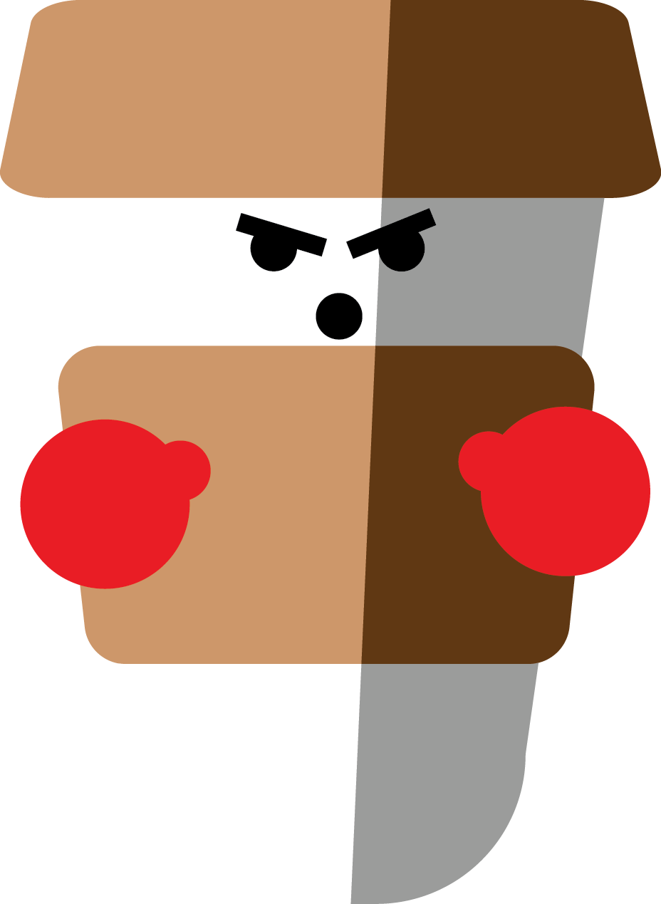

Compare Cups
DISPOSABLE

10 MINUTES
(single use cup)
FREE
MATERIAL
- Paper
- Plastic inner lining (polyethylene)
RECYCLABLE?
NO
Due to the polyethylene inner lining, it is not recyclable in New Zealand as there is no recycling system for them.
HEALTH
SIZE/CAPACITY
8oZ
12oZ
16oZ
63 cups per person person year.
295 million paper cups are being used in New Zealand.
REUSABLE PLASTIC
2 YEARS
till you don't care about it
$2-$10
MATERIAL
Plastic.
RECYCLABLE?
YES
HOWEVER, it never really actually goes away. It will still go through the system of recycling, but eventually it will not be recyclable and then will be left in landfills.
HEALTH
Plastics leach toxins when heated. (Coffee is hot) You are in taking toxins from the plastic that are not good for you.
SIZE/CAPACITY
8oZ
12oZ
16oZ
KEEP CUP

YEARS
(As long as you don't drop it)
$32-$40
MATERIAL
- Temepered soda lime glass ft. sustainable natural cork.
RECYCLABLE?
YES
All the material is recyclable in New Zealand. Even the: LPDE #4 and Polypropylene #7. They can be recycled at end of life.
HEALTH
BPA and BPS FREE
SIZE/CAPACITY
8oZ
12oZ
16oZ
by using a keepcup over 3.5 billion coffee cups are being diverted from landfills.
Over a year use of a keep cup, reduces green house gases of up to 92% compared to disposable cups.